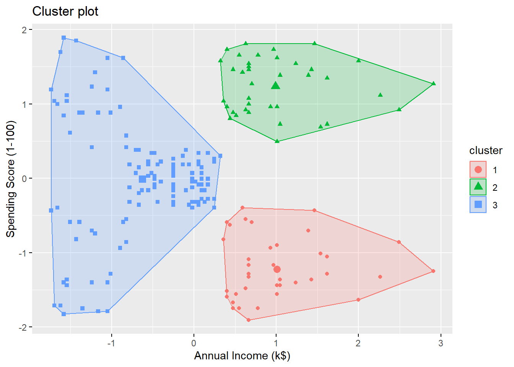
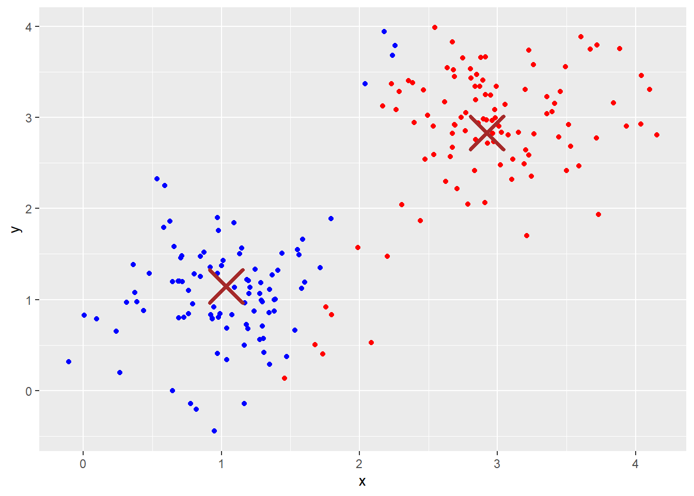
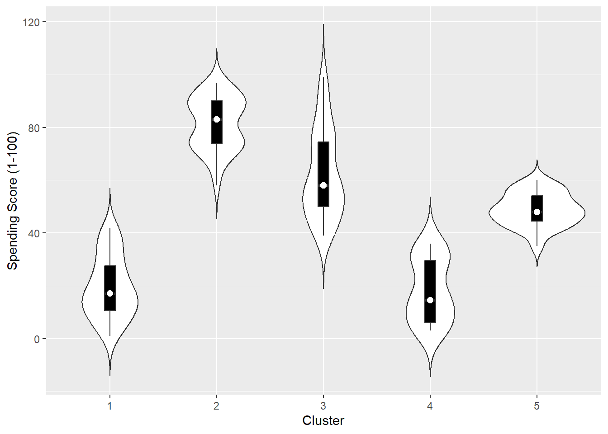
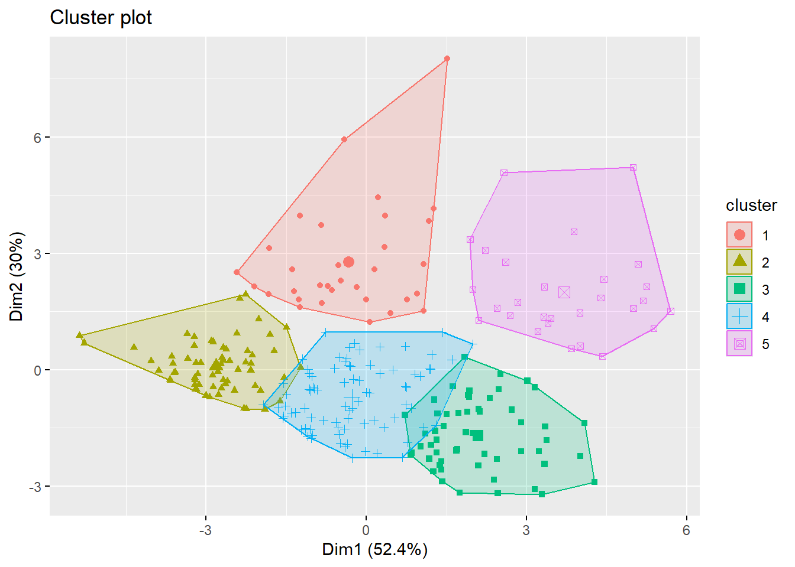

Chapter 17 k-means Clustering
Packages used:
library(tidyverse) # for read_csv
library(factoextra) # visualize clusering results
library(jpeg) # readJPEG reads an image from a JPEG file/content into a raster array
library(ggpubr)17.1 Introduction
Clustering
Clustering is an unsupervised learning task that divides data into clusters, or groups of “similar” items while data points in different clusters are very different. It is an unsupervised learning method as we do not have “labels” of the data. We do not have the ground truth to compare the results. Clustering will only tell you which groups of data are similar. One may get some meaningful interpretation of the groups by studying the members in each group, e.g., by calculating some summary statistics and making use of some visualization tools.
\(k\)-means clustering
\(k\)-means clustering is one of the most popular clustering methods. It is intended for situations in which all variables are of the numeric type.
In \(k\)-means clustering, all the examples are assigned to one of the \(k\) clusters, where \(k\) is a positive integer that has been specified before performing the clustering. The goal is to assign similar data to the same cluster.
Some Applications
Cluster analysis: Interesting groups may be discovered, such as the groups of motor insurance policy holders with a high average claim cost, or the groups of clients in a banking database having a heavy investment in real estate. In marketing segmentation, we segment customers into groups with similar demographics or buying patterns for targeted marketing campaigns
Image segmentation: The goal of segmentation is to partition an image into regions each of which has a reasonably homogeneous visual appearance or which corresponds to objects or parts of objects.
Notation and Setting
We have \(n\) data points \(x_i = (x_{i1},\ldots,x_{ip})' \in \mathbb{R}^p\), \(i=1,\ldots,n\). We use the notation \(C_i\) to denote which cluster the \(i\)th observation is assigned to. For example, \(C_1 = 2\) means the \(1\)st observation is assigned to the \(2\)nd cluster, and \(C_2 = 3\) means the \(2\)nd observation is assigned to the \(3\)rd cluster.
We use
- \(i\) to index data
- \(j\) to index cluster
- \(l\) to index feature
Dissimilarity measure
In clustering, one have to define a dissimilarity measure \(d\). In \(k\)-means clustering, the squared Euclidean distance is used. Given two data points \(x_i = (x_{i1},\ldots,x_{ip})\) and \(x_{i'} = (x_{i'1},\ldots,x_{i'p})\), the squared Euclidean distance is given by \[\begin{equation*} d(x_i, x_{i'}) = \sum^p_{l=1} (x_{il} - x_{i'l})^2 = ||x_i - x_{i'}||^2. \end{equation*}\]
k-means clustering algorithm (Lloyd’s algorithm)
Specify the number of clusters \(k\)
Randomly select \(k\) data points as the centroids, denoted by \(\mu_1,\ldots,\mu_k\).
For each \(i=1,\ldots,n\), set \[ C_i = \text{argmin}_j ||x_i - \mu_j||^2. \] In words, assign the closest cluster to the \(i\)th observation.
For each \(j=1,\ldots,k\), \(l=1,\ldots,p\), set \[ \mu_{jl} = \frac{\sum^n_{i=1}I(C_i =j) x_{il}}{\sum^n_{i=1}I(C_i =j)}. \] In words, \(\mu_j\) is simply the mean of all the points assigned to \(j\)th cluster. Note that \(\mu_j = (\mu_{j1},\ldots,\mu_{jp})\).
Repeat Steps 3 - 4 until the assignments do not change.
Illustration of the algorithm:
Set \(k=2\).
Randomly select 2 data points as the initial centroids (Brown crosses).

- For each observation, find the nearest centroid.

- Compute the mean of all the points assigned to the two cluster to find the new centroids.

Repeat Step 3:

Repeat Step 4:

Remarks
\(\text{argmin}\) is the argument of the minimum. \(\text{argmin}_j ||x_i - \mu_j||^2\) means the value of \(j\) such that \(||x_i - \mu_j||^2\) is minimum.
\(I(C_i = j)\) equals \(1\) if \(C_i = j\) and equals \(0\) otherwise. The \(I\) is the indicator function.
\(k\)-means is sensitive to the number of clusters. See the elbow method.
\(k\)-means is sensitive to the randomly-chosen cluster centers. Different initial centers may result in different clustering results. As a result, we should use multiple set of initial cluster centers and choose the best result (smallest within-group sum of squared errors, see the end of this chapter).
Scale your data before applying \(k\)-means clustering.
For categorical data: one possible solution is to use \(k\)-modes. The \(k\)-modes algorithm uses a matching dissimilarity measure to deal with categorical objects, replaces the means of clusters with modes, and uses a frequency-based method to update modes in the clustering process to minimize the clustering cost functions
For mixed data (numeric + categorical features): can use \(k\)-prototypes. It integrates the \(k\)-means and \(k\)-modes algorithms using a combined dissimilarity measure.
R package: clustMixType
17.2 Applications
17.2.1 Cluster Analysis
The Mall_Customers.csv (in onQ) contains the gender, age, annual income and spending score of some customers.
mall
## # A tibble: 200 × 5
## CustomerID Gender Age `Annual Income (k$)` `Spending Score (1-100)`
## <dbl> <chr> <dbl> <dbl> <dbl>
## 1 1 Male 19 15 39
## 2 2 Male 21 15 81
## 3 3 Female 20 16 6
## 4 4 Female 23 16 77
## 5 5 Female 31 17 40
## 6 6 Female 22 17 76
## 7 7 Female 35 18 6
## 8 8 Female 23 18 94
## 9 9 Male 64 19 3
## 10 10 Female 30 19 72
## # ℹ 190 more rowsWe will use the kmeans() function in R (contained in base R) to perform \(k\)-means clustering.
x: your dataframe/ matrixcenters: the number of clustersnstart: how many random sets should be chosen (the best result will be reported)
Let’s perform a \(k\)-means clustering on the customers using Annual Income (k$) and Spending Score (1-100) with \(k=3\).
# To view the cluster
mall_kmeans$cluster
## [1] 3 3 3 3 3 3 3 3 3 3 3 3 3 3 3 3 3 3 3 3 3 3 3 3 3 3 3 3 3 3 3 3 3 3 3 3 3 3 3 3 3 3 3 3 3 3 3 3 3 3 3 3 3 3 3 3 3 3 3 3 3
## [62] 3 3 3 3 3 3 3 3 3 3 3 3 3 3 3 3 3 3 3 3 3 3 3 3 3 3 3 3 3 3 3 3 3 3 3 3 3 3 3 3 3 3 3 3 3 3 3 3 3 3 3 3 3 3 3 3 3 3 3 3 3
## [123] 3 2 1 2 1 2 1 2 1 2 1 2 1 2 1 2 1 2 1 2 1 2 1 2 1 2 1 2 1 2 1 2 1 2 1 2 1 2 1 2 1 2 1 2 1 2 1 2 1 2 1 2 1 2 1 2 1 2 1 2 1
## [184] 2 1 2 1 2 1 2 1 2 1 2 1 2 1 2 1 2
# To view the centers
mall_kmeans$centers
## Annual Income (k$) Spending Score (1-100)
## 1 1.0066735 -1.22246770
## 2 0.9891010 1.23640011
## 3 -0.6246222 -0.01435636Visualize the clusters:
 By looking at the plot, we see the 3 clusters are
- high annual income + low spending score
- high annual income + high spending score
- low annual income
Let’s try \(k=5\):
Visualizing the clusters:

The \(5\) clusters are
- high annual income + low spending score
- high annual income + high spending score
- medium annual income + medium spending score
- low annual income + high spending score
- low annual income + low spending score
Now, let’s use one more variable for clustering:
To visualize more than 2 variables, we can use a dimension reduction technique called principal component analysis. The function fviz_cluster will automatically perform that and give you a \(2D\)-plot using the first two principal comonents.

To understand more about the clusters, we should take a look at some plots and some summary statistics. An example is to use violin plots.
Violin Plots
A violin plot is a kernel density estimate, mirrored so that it forms a symmetrical shape. It is a helpful tool to compare multiple data distributions when we put several plots side by side. To provide additional information, we can also have box plots overlaid, with a white dot at the median.
We first add the cluster information to our dataset.
Create violin plots
outlier.colour = NA: do not display outliers
mall_cluster %>%
ggplot(aes(x = Cluster, y = `Annual Income (k$)`)) +
geom_violin(trim = FALSE) +
geom_boxplot(width = .1, fill = "black", outlier.colour = NA) +
stat_summary(fun = median, geom = "point", fill = "white", shape = 21, size = 2.5)
The other two variables:

 Determine the optimal \(k\)
Determine the optimal \(k\)
The elbow method is a heuristic method to determine the number of clusters. We plot the total within-group sum of squared errors against the number of clusters. We pick the elbow of the curve as the number of clusters to use. The elbow (or knee) of a curve is a point where the curve visibly bends.
WSS <- rep(0, 10)
for (k in 1:10) {
# extract the total within-group sum of squared errors
WSS[k] = kmeans(x = scale(mall[, 3:5]), centers = k, nstart = 25)$tot.withinss
}
ggplot(mapping = aes(x = 1:10, y = WSS)) +
geom_line() +
geom_point() +
geom_vline(xintercept = 4) +
scale_x_discrete(name = "k", limits = factor(1:10)) +
labs(title = "Elbow Method")
It seems to me that the curve bends at \(k=4\).
Another example using the dataset Hitters from ISLR2.
library(ISLR2)
Hitters <- na.omit(Hitters)
Hitters_kmeans <- kmeans(x = scale(Hitters[, 1:10]), centers = 5, nstart = 25)

17.2.2 Image Segementation and Image Compression
Image segementation using \(k\)-means clustering:
Each pixel is a data point in a 3-dimensioal space comprising the intensities of the red, blue, and green channels.
Group the pixels into \(k\) different clusters
For a given value of \(k\). the result from the \(k\)-means clustering is an image using a paletter of only \(k\) colors.
Note: a direct use of \(k\)-means clustering is not a particular sophisticated approach to image segmentation (e.g., we haven’t taken into account of the information from spatial proximity)
We will use the readJPEG() function from the package jpeg to reads an image from a jpeg file into a raster array.
# 3-way array (matrix = 2-way array)
(image_dim <- dim(image))
## [1] 200 300 3
# Assign RGB channels to each pixel
image_RGB <- tibble(
x = rep(1:image_dim[2], each = image_dim[1]),
y = rep(image_dim[1]:1, image_dim[2]),
R = as.vector(image[, , 1]),
G = as.vector(image[, , 2]),
B = as.vector(image[, , 3])
)
# use view(image_RGB) to view the resulting tibbleOriginal Image

Apply \(k\)-means clustering:

Code for creating the above images:
cluster_plot <- list()
i <- 0
for (k in c(2, 3, 5, 8)) {
i <- i + 1
# perform k-means
image_kmeans <- kmeans(image_RGB[, c("R", "G", "B")], centers = k, nstart = 25)
# for each pixel, use the colour of the center of the corresponding cluster
cluster_color <- rgb(image_kmeans$centers[image_kmeans$cluster, ])
cluster_plot[[i]] <- ggplot(data = image_RGB, aes(x = x, y = y)) +
geom_point(colour = cluster_color) +
labs(title = paste("k = ", k)) +
xlab("") +
ylab("")
}
# save the plots to your computer
png(paste0("image/flower_cluster.png"), width = 900, height = 600)
ggarrange(cluster_plot[[1]], cluster_plot[[2]], cluster_plot[[3]], cluster_plot[[4]])
dev.off()Another example
Original Image:

Apply \(k\)-means clustering:

Image Compression
Two types of data (image is a special case of data) compression:
lossless data compression: reconstruct the original data exactly from the compressed representation
lossy data compression: accept some errors in the reconstruction in return for higher levels of compression than can be achieved in the lossless case
To apply \(k\)-means clustering to lossy data compression:
For each pixel, store only the identity of the cluster to which it is assigned
Store the values of the \(k\) cluster centers
Bit: The bit is the most basic unit of information in computing and digital communications. The bit represents a logical state with one of two possible values. These values are most commonly represented as either “1” or “0”. \(8\) bits can represent at most \(2^8 = 256\) different values.
Suppose the original image has \(n\) pixels comprising \(R, G, B\) values each of which is stored with \(8\) bits of precision.
To store the whole image, we needs \(24 n\) bits.
Using \(k\)-means clustering, we needs \(\log_2 K\) bits per pixel to store the cluster identity and \(24\) bits for each cluster. Total = \(24K + N \log_2 K\).
Example:
For an image with \(240 \times 180 = 43,200\) pixels, we need \(1,036,800\) bits to transmit directly.
For the same image, using \(k\)-means clustering, we need
- \(43,248\) bits (\(k=2\)), compression ratios: \(4.2\%\)
- \(86,472\) bits (\(k=3\)), compression ratios: \(8.3\%\)
- \(173,040\) bits (\(k=10\)), compression ratios: \(16.7\%\)
Explanation of the algorithm
The \(k\)-means algorithm searches for a partition of the data into \(k\) clusters . It tries to minimize the within-group sum of squared errors (WSS): \[\begin{equation*} WSS(C, \mu) = \sum^k_{j=1} \sum^n_{i=1} I(C_i = j) ||x_i - \mu_j||^2, \end{equation*}\] where \(C = (C_1,\ldots,C_n)\) and \(\mu = \{\mu_1,\ldots,\mu_k\}\). To minimize WGSS, the algorithm iteratively solves two problems:
Problem 1. Fix \(\mu\) and minimize \(WGSS(C, \mu)\) with respect to \(C\) (Step 3 in the algorithm)
Problem 2. Fix \(C\) and minimize \(WGSS(C, \mu)\) with respect to \(\mu\) (Step 4 in the algorithm)
For Problem 1, the solution is \[\begin{equation*} C_i = \text{argmin}_j ||x_i - \mu_j||^2. \end{equation*}\]
For Problem 2, the solution is \[\begin{equation*} \mu_{jl} = \frac{\sum^n_{i=1}I(C_i = j) x_{il}}{\sum^n_{i=1} I(C_i=j)}. \end{equation*}\]